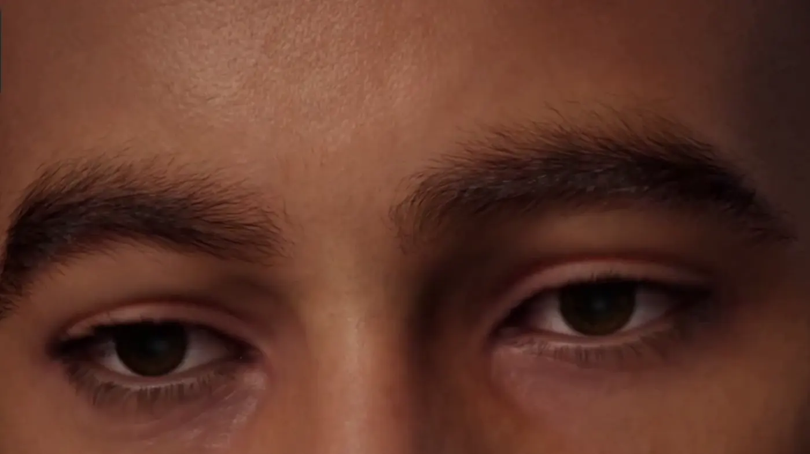

Music video · AI vocals · my story
A song for Xiao Mi
A Chinese song written to comfort a close friend.
Creative lab
What I build when nobody asked: digital humans, Unreal Engine worlds and songs sung entirely by AI voices.
02 / Unreal Engine 5
I explore environment design, lighting, interactive scenes and digital characters in Unreal Engine 5. Click any scene to see it full size.



04 / AI music · Personal hobby
A hobby of mine: when a topic is close to my heart, I turn it into a song. The idea, the story and the final cut are mine. Every voice and instrument you hear is AI-generated. No human singers, no microphone. These are a few samples.
Press play below: this line becomes the live waveform of a voice that never existed.
Drafts lyrics from my idea.
Sings them: AI voice and music.
Times every lyric line.
I cut the final video.
Music video · AI vocals · my story
A Chinese song written to comfort a close friend.
Music video · AI vocals · my story
A song I made for Palestine.
05 / Away from the screen